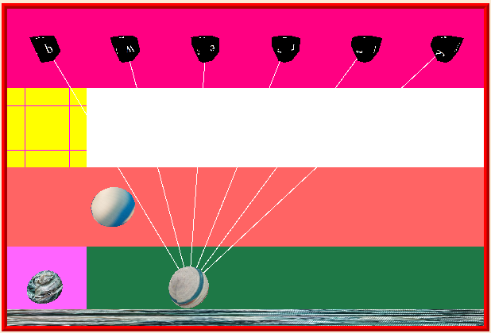
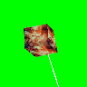
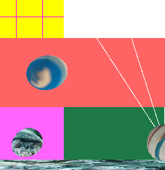
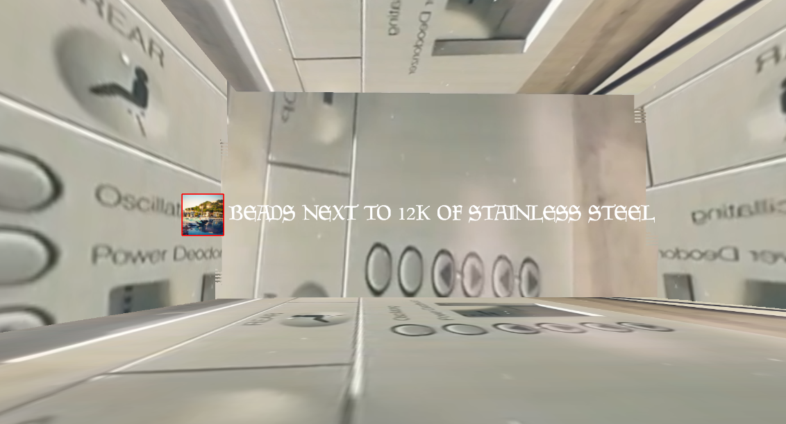
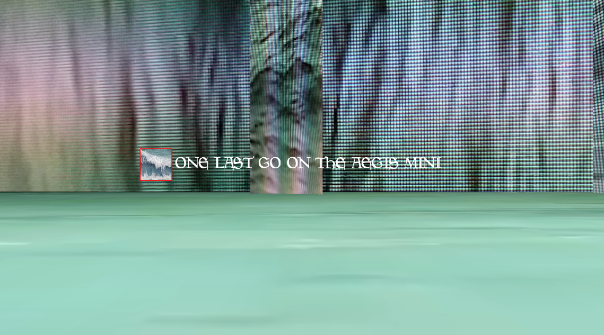
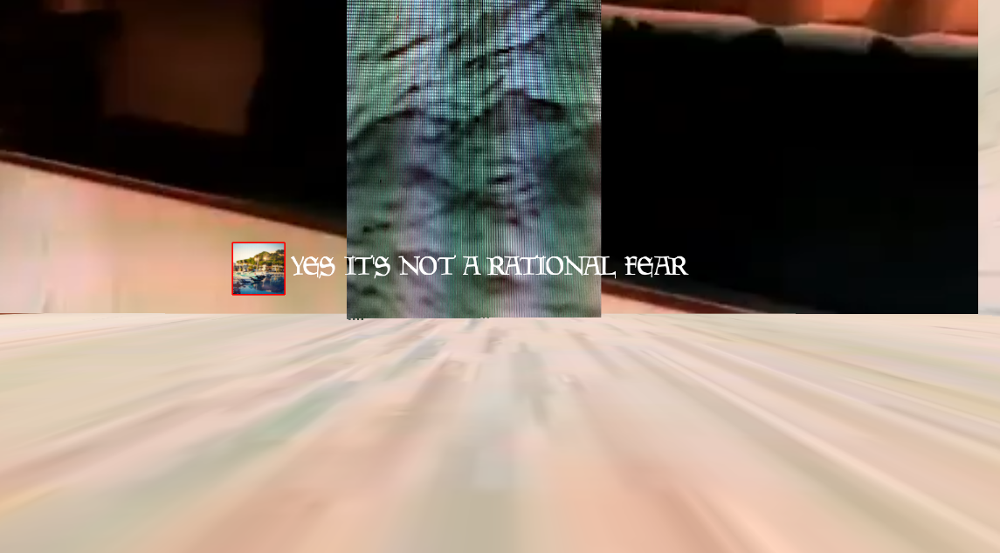
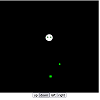
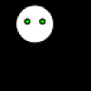
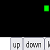

GABRIEL MANZI
- Joy Parade -
...
nashville season seven fanfiction adventure game
  
- Fog Bank -
- Information -
...
voice-pitch-controlled noise synth for improvisation
  
- Marina 2002 -
...
demo for unmade walking simulator about dying in spain on holiday and looping thru memory
- Knoll Thirst -
...
hyper text concrete poem
  
- Creature -
...
creature follows around and has different speeds depending on hunger levels
(currently broken)